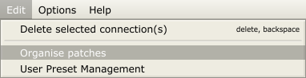
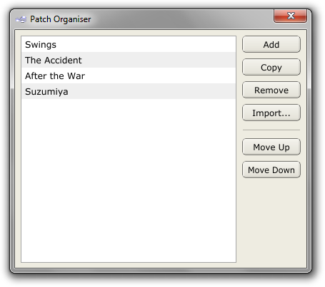

Patches
One of the core Pedalboard concepts is that of Patches. A patch is essentially a collection of plugins and the signal path through them from audio input to audio output. This page explains the various associated functions.
Patch Selection
Switching between patches is done with the three patch controls at the bottom left of the main window:

The -/+ buttons will iterate through the available patches one-by-one, while the Patches: combobox lets you select from a list of all the available patches. Note that the combobox text is editable; to change the name of the currently-selected patch, you just click its text in the combobox.
Also note that you can switch between patches with MIDI or OSC by setting up the relevant Application Mappings.

To add a new patch, simply select <new patch> from the end of the combobox list.
Patch Organiser
For more control over the organisation of your patches, there is a Patch Organiser window, accessible via the Organise patches entry in the Edit menu.
Organise patches"/>
The Patch Organiser window lets you copy, rename, remove, import and rearrange patches.

Most of those functions are self-explanatory. The import button lets you import a patch from another Pedalboard2 .pdl file, making it easy to re-use individual patches between files. To rename a patch, simply double-click its entry in the window's list box.